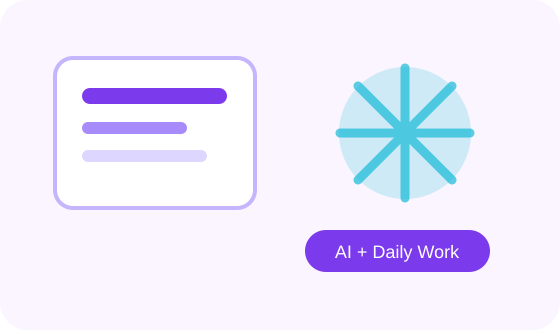

روزمرہ کاموں میں پیداواریت کے لیے اے آئی
وقت بچانے، summaries، plans، reports، checklists اور routine کاموں میں AI کا استعمال۔

پیداواریت کا مطلب
پیداواریت کا مطلب ہے کم وقت میں بہتر اور منظم کام کرنا۔ اے آئی آپ کے کام کو مکمل طور پر replace نہیں کرتی، بلکہ planning، drafting، organizing اور reviewing میں مدد دیتی ہے۔
کن کاموں میں مدد مل سکتی ہے؟
ای میل کا draft، meeting notes کا خلاصہ، report outline، weekly plan، task list، research summary، social media ideas، customer replies، presentation points، اور documents کو آسان زبان میں تبدیل کرنا۔
AI کو اپنا junior assistant سمجھیں: یہ draft، list اور structure دے سکتا ہے، final فیصلہ آپ کا ہوگا۔
ہر productivity task میں آخر میں یہ ضرور کہیں: “اہم نکات bullet points میں دیں۔”
کام کا بہاؤ
پہلے اپنے کام کا مقصد لکھیں، پھر AI سے structure بنوائیں، پھر draft لیں، پھر اپنی معلومات کے مطابق edit کریں۔ مثال: “اس meeting transcript سے 5 action items نکالیں، ہر item کے ساتھ ذمہ دار شخص اور deadline کے لیے جگہ رکھیں۔”
ذاتی productivity
آپ daily schedule، study routine، workout plan، shopping list، travel checklist، meal ideas، اور personal reminders کے لیے بھی AI سے مدد لے سکتے ہیں۔ لیکن صحت، قانونی یا مالی فیصلوں میں professional advice ضروری رہتی ہے۔
حدود
AI آپ کے لیے سوچنے میں مدد دے سکتی ہے، مگر priority آپ کو set کرنی ہوگی۔ یہ غلط summary بھی دے سکتی ہے، اس لیے important documents میں اصل متن سے verify کرنا ضروری ہے۔
عملی چیک لسٹ
- کام شروع کرنے سے پہلے مقصد صاف لکھیں۔
- AI کو audience، زبان اور مطلوبہ format بتائیں۔
- جواب کو اپنے حالات کے مطابق edit کریں۔
- اہم معلومات، تاریخیں، قیمتیں اور facts ضرور verify کریں۔
- ذاتی، مالی یا حساس معلومات share کرنے سے بچیں۔
Quick Quiz
نیچے دیے گئے سوالات حل کریں تاکہ آپ اپنی سمجھ چیک کر سکیں۔